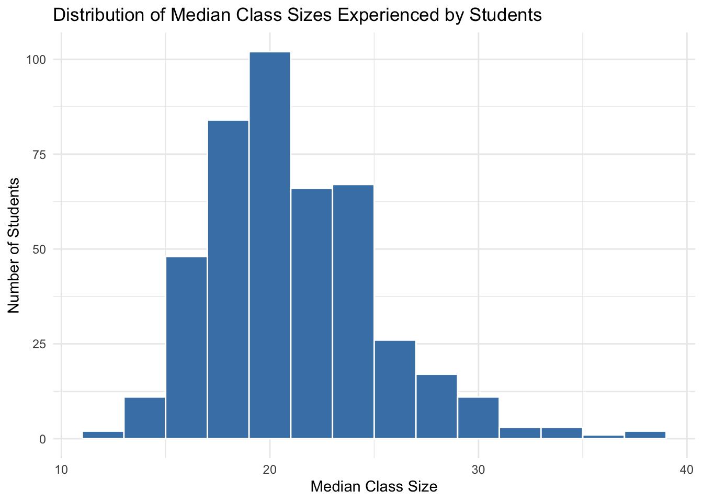

students_1 <- data.frame(
student = c("A", "B", "C"),
class = c("STAT 101", "GEOL 101", "ANTH 101")
)
# Check it out
students_1 student class
1 A STAT 101
2 B GEOL 101
3 C ANTH 101Understand how to join different datasets:
For more information about the topics covered in this chapter, refer to the resources below:
Where are we? Data preparation
Thus far, we’ve learned how to:
In practice, we often have to collect and combine data from various sources in order to address our research questions. Example:
What are the best predictors of album sales? Combine: - Spotify data on individual songs (eg: popularity, genre, characteristics) - sales data on individual songs
What are the best predictors of flight delays? Combine: - data on individual flights including airline, starting airport, and destination airport - data on different airlines (eg: ticket prices, reliability, etc) - data on different airports (eg: location, reliability, etc)
Consider the following (made up) data on students and course enrollments:
students_1 <- data.frame(
student = c("A", "B", "C"),
class = c("STAT 101", "GEOL 101", "ANTH 101")
)
# Check it out
students_1 student class
1 A STAT 101
2 B GEOL 101
3 C ANTH 101enrollments_1 <- data.frame(
class = c("STAT 101", "ART 101", "GEOL 101"),
enrollment = c(18, 17, 24)
)
# Check it out
enrollments_1 class enrollment
1 STAT 101 18
2 ART 101 17
3 GEOL 101 24Our goal is to combine or join these datasets into one. For reference, here they are side by side:
First, consider the following:
What variable or key do these datasets have in common? Thus by what information can we match the observations in these datasets?
The common key is “class”
Relative to this key, what info does students_1 have that enrollments_1 doesn’t?
students_1 has information about which student is in which class
Relative to this key, what info does enrollments_1 have that students_1 doesn’t?
enrollments_1 has information about the total enrollment for each class
Let’s learn by doing. First, try the left_join() function:
── Attaching core tidyverse packages ──────────────────────── tidyverse 2.0.0 ──
✔ dplyr 1.1.4 ✔ readr 2.1.5
✔ forcats 1.0.0 ✔ stringr 1.5.1
✔ ggplot2 3.5.2 ✔ tibble 3.2.1
✔ lubridate 1.9.4 ✔ tidyr 1.3.1
✔ purrr 1.0.4
── Conflicts ────────────────────────────────────────── tidyverse_conflicts() ──
✖ dplyr::filter() masks stats::filter()
✖ dplyr::lag() masks stats::lag()
ℹ Use the conflicted package (<http://conflicted.r-lib.org/>) to force all conflicts to become errorsJoining with `by = join_by(class)` student class enrollment
1 A STAT 101 18
2 B GEOL 101 24
3 C ANTH 101 NAWhat did this do? What are the roles of students_1 (the left table) and enrollments_1 (the right table)?
The left_join() kept all rows from students_1 (the left table) and added the enrollment information from enrollments_1 (the right table) where there was a match on the class variable. Since “ANTH 101” doesn’t exist in enrollments_1, that enrollment value is NA.
What, if anything, would change if we reversed the order of the data tables? Think about it, then try.
Joining with `by = join_by(class)` class enrollment student
1 STAT 101 18 A
2 ART 101 17 <NA>
3 GEOL 101 24 BWhen we reverse the order, we keep all rows from enrollments_1 and add student information where there’s a match. “ART 101” doesn’t have any student in students_1, so the student value is NA.
Next, explore how our datasets are joined using inner_join():
Joining with `by = join_by(class)` student class enrollment
1 A STAT 101 18
2 B GEOL 101 24What did this do? What are the roles of students_1 (the left table) and enrollments_1 (the right table)?
The inner_join() kept only rows where there was a match between students_1 and enrollments_1 on the class variable. Only “STAT 101” and “GEOL 101” appear in both datasets, so only those rows are kept.
What, if anything, would change if we reversed the order of the data tables? Think about it, then try.
Joining with `by = join_by(class)` class enrollment student
1 STAT 101 18 A
2 GEOL 101 24 BThe result is the same regardless of the order for inner_join() - we still get only the matching rows. The only difference is the order of the columns.
Next, explore how our datasets are joined using full_join():
Joining with `by = join_by(class)` student class enrollment
1 A STAT 101 18
2 B GEOL 101 24
3 C ANTH 101 NA
4 <NA> ART 101 17What did this do? What are the roles of students_1 (the left table) and enrollments_1 (the right table)?
The full_join() kept all rows from both students_1 and enrollments_1, filling in NAs where there was no match. We get “ANTH 101” with no enrollment info and “ART 101” with no student info.
What, if anything, would change if we reversed the order of the data tables? Think about it, then try.
Joining with `by = join_by(class)` class enrollment student
1 STAT 101 18 A
2 ART 101 17 <NA>
3 GEOL 101 24 B
4 ANTH 101 NA CThe result is the same in terms of data content for full_join() regardless of the order. Only the column order changes.
Mutating joins add new variables (columns) to the left data table from matching observations in the right table:
left_data |> mutating_join(right_data)
The most common mutating joins are:
left_join() Keeps all observations from the left, but discards any observations in the right that do not have a match in the left.
inner_join() Keeps only the observations from the left with a match in the right.
full_join() Keeps all observations from the left and the right. (This is less common than left_join() and inner_join()).
NOTE: When an observation in the left table has multiple matches in the right table, these mutating joins produce a separate observation in the new table for each match.
Mutating joins combine information, thus increase the number of columns in a dataset (like mutate()). Filtering joins keep only certain observations in one dataset (like filter()), not based on rules related to any variables in the dataset, but on the observations that exist in another dataset. This is useful when we merely care about the membership or non-membership of an observation in the other dataset, not the raw data itself.
In our example data, suppose enrollments_1 only included courses being taught in the Theater building:
Joining with `by = join_by(class)` student class
1 A STAT 101
2 B GEOL 101What did this do? What info would it give us?
The semi_join() kept only the rows from students_1 where there was a match in enrollments_1 on the class variable. It returns only the columns from students_1, not adding any columns from enrollments_1. This would give us the list of students who are taking classes in the Theater building.
How does semi_join() differ from inner_join()?
semi_join() only keeps columns from the left table, while inner_join() keeps columns from both tables.
What, if anything, would change if we reversed the order of the data tables? Think about it, then try.
Joining with `by = join_by(class)` class enrollment
1 STAT 101 18
2 GEOL 101 24If we reverse the order, we get the courses in enrollments_1 that have a student in students_1. “ART 101” is dropped because no student in students_1 is taking it.
Let’s try another filtering join for our example data:
Joining with `by = join_by(class)` student class
1 C ANTH 101What did this do? What info would it give us?
The anti_join() kept only the rows from students_1 where there was NO match in enrollments_1. In this case, it’s just “ANTH 101”. This would give us the list of students taking classes not in the Theater building.
What, if anything, would change if we reversed the order of the data tables? Think about it, then try.
Joining with `by = join_by(class)` class enrollment
1 ART 101 17If we reverse the order, we get courses in enrollments_1 that don’t have any student in students_1. Only “ART 101” falls into this category.
Filtering joins keep specific observations from the left table based on whether they match an observation in the right table.
semi_join() Discards any observations in the left table that do not have a match in the right table. If there are multiple matches of right cases to a left case, it keeps just one copy of the left case.
anti_join() Discards any observations in the left table that do have a match in the right table.
Define two new datasets, with different students and courses:
students_2 <- data.frame(
student = c("D", "E", "F"),
class = c("COMP 101", "BIOL 101", "POLI 101")
)
# Check it out
students_2 student class
1 D COMP 101
2 E BIOL 101
3 F POLI 101enrollments_2 <- data.frame(
course = c("ART 101", "BIOL 101", "COMP 101"),
enrollment = c(18, 20, 19)
)
# Check it out
enrollments_2 course enrollment
1 ART 101 18
2 BIOL 101 20
3 COMP 101 19To connect the course enrollments to the students’ courses, try do a left_join(). You get an error! Identify the problem by reviewing the error message and the datasets we’re trying to join.
Error in `left_join()`:
! `by` must be supplied when `x` and `y` have no common variables.
ℹ Use `cross_join()` to perform a cross-join.The problem is that the column names for the course information are different between the two datasets: “class” in students_2 and “course” in enrollments_2. We need to specify which columns to join on.
The problem is that course name, the key or variable that links these two datasets, is labeled differently: class in the students_2 data and course in the enrollments_2 data. Thus we have to specify these keys in our code:
student class enrollment
1 D COMP 101 19
2 E BIOL 101 20
3 F POLI 101 NA# The order of the keys is important:
# join_by("left data key" == "right data key")
# The order is mixed up here, thus we get an error:
students_2 |>
left_join(enrollments_2, join_by(course == class))Error in `left_join()`:
! Join columns in `x` must be present in the data.
✖ Problem with `course`.Define another set of fake data which adds grade information:
# Add student grades in each course
students_3 <- data.frame(
student = c("Y", "Y", "Z", "Z"),
class = c("COMP 101", "BIOL 101", "POLI 101", "COMP 101"),
grade = c("B", "S", "C", "A")
)
# Check it out
students_3 student class grade
1 Y COMP 101 B
2 Y BIOL 101 S
3 Z POLI 101 C
4 Z COMP 101 A# Add average grades in each course
enrollments_3 <- data.frame(
class = c("ART 101", "BIOL 101","COMP 101"),
grade = c("B", "A", "A-"),
enrollment = c(20, 18, 19)
)
# Check it out
enrollments_3 class grade enrollment
1 ART 101 B 20
2 BIOL 101 A 18
3 COMP 101 A- 19Try doing a left_join() to link the students’ classes to their enrollment info. Did this work? Try and figure out the culprit by examining the output.
Joining with `by = join_by(class, grade)` student class grade enrollment
1 Y COMP 101 B NA
2 Y BIOL 101 S NA
3 Z POLI 101 C NA
4 Z COMP 101 A NAThe join “worked” in that it ran without error, but none of the enrollment values were matched. The problem is that both datasets have “grade” columns with different meanings, so the join is trying to match on both “class” AND “grade”, which doesn’t produce any matches.
The issue here is that our datasets have 2 column names in common: class and grade. BUT grade is measuring 2 different things here: individual student grades in students_3 and average student grades in enrollments_3. Thus it doesn’t make sense to try to join the datasets with respect to this variable. We can again solve this by specifying that we want to join the datasets using the class variable as a key.
student class grade.x grade.y enrollment
1 Y COMP 101 B A- 19
2 Y BIOL 101 S A 18
3 Z POLI 101 C <NA> NA
4 Z COMP 101 A A- 19What are grade.x and grade.y?
grade.x is the individual student grade from students_3, and grade.y is the average grade for the course from enrollments_3. The .x and .y suffixes are added automatically to distinguish the columns with the same name from the two different datasets.
Before applying these ideas to bigger datasets, let’s practice identifying which join is appropriate in different scenarios. Define the following fake data on voters (people who have voted) and contact info for voting age adults (people who could vote):
# People who have voted
voters <- data.frame(
id = c("A", "D", "E", "F", "G"),
times_voted = c(2, 4, 17, 6, 20)
)
voters id times_voted
1 A 2
2 D 4
3 E 17
4 F 6
5 G 20# Contact info for voting age adults
contact <- data.frame(
name = c("A", "B", "C", "D"),
address = c("summit", "grand", "snelling", "fairview"),
age = c(24, 89, 43, 38)
)
contact name address age
1 A summit 24
2 B grand 89
3 C snelling 43
4 D fairview 38Use the appropriate join for each prompt below. In each case, think before you type:
# 1. We want contact info for people who HAVEN'T voted
contact |>
anti_join(voters, join_by(name == id)) name address age
1 B grand 89
2 C snelling 43# 2. We want contact info for people who HAVE voted
contact |>
semi_join(voters, join_by(name == id)) name address age
1 A summit 24
2 D fairview 38 name address age times_voted
1 A summit 24 2
2 B grand 89 NA
3 C snelling 43 NA
4 D fairview 38 4
5 E <NA> NA 17
6 F <NA> NA 6
7 G <NA> NA 20Let’s apply these ideas to some bigger datasets. In grades, each row is a student-class pair with information on:
# Get rid of some duplicate rows!
grades <- read.csv("https://mac-stat.github.io/data/grades.csv") |>
distinct(sid, sessionID, .keep_all = TRUE)
head(grades) sid grade sessionID
1 S31185 D+ session1784
2 S31185 B+ session1785
3 S31185 A- session1791
4 S31185 B+ session1792
5 S31185 B- session1794
6 S31185 C+ session1795In courses, each row corresponds to a class section with information on:
sessionID dept level sem enroll iid
1 session1784 M 100 FA1991 22 inst265
2 session1785 k 100 FA1991 52 inst458
3 session1791 J 100 FA1993 22 inst223
4 session1792 J 300 FA1993 20 inst235
5 session1794 J 200 FA1993 22 inst234
6 session1795 J 200 SP1994 26 inst230Use R code to take a quick glance at the data.
[1] 5844 3How big are the classes?
Before digging in, note that some courses are listed twice in the courses data:
sessionID n
1 session2047 2
2 session2067 2
3 session2448 2
4 session2509 2
5 session2541 2
6 session2824 2
7 session2826 2
8 session2862 2
9 session2897 2
10 session3046 2
11 session3057 2
12 session3123 2
13 session3243 2
14 session3257 2
15 session3387 2
16 session3400 2
17 session3414 2
18 session3430 2
19 session3489 2
20 session3524 2
21 session3629 2
22 session3643 2
23 session3821 2If we pick out just 1 of these, we learn that some courses are cross-listed in multiple departments:
sessionID dept level sem enroll iid
1 session2047 g 100 FA2001 12 inst436
2 session2047 m 100 FA2001 28 inst436For our class size exploration, obtain the total enrollments in each sessionID, combining any cross-listed sections. Save this as courses_combined. NOTE: There’s no joining to do here!
Let’s first examine the question of class size from the administration’s viewpoint. To this end, calculate the median class size across all class sections. (The median is the middle or 50th percentile. Unlike the mean, it’s not skewed by outliers.)
But how big are classes from the student perspective? To this end, calculate the median class size for each individual student. Once you have the correct output, store it as student_class_size.
# For this we need to join the grades and courses_combined datasets
student_class_size <- grades |>
left_join(courses_combined, by = "sessionID") |>
group_by(sid) |>
summarize(median_class_size = median(enroll))
head(student_class_size)# A tibble: 6 × 2
sid median_class_size
<chr> <dbl>
1 S31185 23.5
2 S31188 21
3 S31191 25
4 S31194 15
5 S31197 24
6 S31200 21 The median class size varies from student to student. To get a sense for the typical student experience and range in student experiences, construct and discuss a histogram of the median class sizes experienced by the students.
ggplot(student_class_size, aes(x = median_class_size)) +
geom_histogram(binwidth = 2, fill = "steelblue", color = "white") +
labs(title = "Distribution of Median Class Sizes Experienced by Students",
x = "Median Class Size",
y = "Number of Students") +
theme_minimal()
This histogram shows the distribution of median class sizes experienced by individual students. Most students experience median class sizes between 15 and 30 students, with the peak around 22-24 students. Very few students have median class sizes below 10 or above 40. The distribution is somewhat right-skewed, suggesting a few students tend to take unusually large classes.
Show data on the students that enrolled in session1986. THINK FIRST: Which of the 2 datasets do you need to answer this question? One? Both?
Below is a dataset with all courses in department E:
What students enrolled in classes in department E? (We just want info on the students, not the classes.)
Use all of your wrangling skills to answer the following prompts!
You’ll need an extra table to convert grades to grade point averages:
gpa_conversion <- tibble(
grade = c("A+", "A", "A-", "B+", "B", "B-", "C+", "C", "C-", "D+", "D", "D-", "NC", "AU", "S"),
gp = c(4.3, 4, 3.7, 3.3, 3, 2.7, 2.3, 2, 1.7, 1.3, 1, 0.7, 0, NA, NA)
)
gpa_conversion# A tibble: 15 × 2
grade gp
<chr> <dbl>
1 A+ 4.3
2 A 4
3 A- 3.7
4 B+ 3.3
5 B 3
6 B- 2.7
7 C+ 2.3
8 C 2
9 C- 1.7
10 D+ 1.3
11 D 1
12 D- 0.7
13 NC 0
14 AU NA
15 S NA How many total student enrollments are there in each department? Order from high to low.
# Join grades with courses to get department info, then count
grades |>
left_join(courses, by = "sessionID") |>
count(dept) |>
arrange(desc(n))Warning in left_join(grades, courses, by = "sessionID"): Detected an unexpected many-to-many relationship between `x` and `y`.
ℹ Row 64 of `x` matches multiple rows in `y`.
ℹ Row 807 of `y` matches multiple rows in `x`.
ℹ If a many-to-many relationship is expected, set `relationship =
"many-to-many"` to silence this warning. dept n
1 d 483
2 M 410
3 m 363
4 O 359
5 W 336
6 q 318
7 F 296
8 k 265
9 j 249
10 D 240
11 C 237
12 G 237
13 R 195
14 n 191
15 i 177
16 Q 157
17 J 148
18 X 145
19 p 129
20 e 128
21 K 112
22 H 110
23 N 99
24 S 97
25 b 67
26 T 62
27 Y 57
28 t 56
29 L 50
30 V 50
31 g 34
32 s 31
33 o 27
34 I 26
35 P 26
36 B 24
37 U 24
38 E 12
39 A 2
40 l 1What’s the grade-point average (GPA) for each student?
# Join grades with gpa_conversion, then calculate each student's average
grades |>
left_join(gpa_conversion, by = "grade") |>
group_by(sid) |>
summarize(gpa = mean(gp, na.rm = TRUE)) |>
arrange(desc(gpa)) |>
head()# A tibble: 6 × 2
sid gpa
<chr> <dbl>
1 S31245 4
2 S31254 4
3 S31491 4
4 S31518 3.98
5 S31458 3.98
6 S31677 3.97What’s the median GPA across all students?
What fraction of grades are below B+?
# Join grades with gpa_conversion, then calculate proportion
grades |>
left_join(gpa_conversion, by = "grade") |>
filter(!is.na(gp)) |> # Remove NA grades (AU, S)
summarize(
total_grades = n(),
below_b_plus = sum(gp < 3.3),
fraction = below_b_plus / total_grades
) total_grades below_b_plus fraction
1 5429 1539 0.2834776What’s the grade-point average for each instructor? Order from low to high.
# Join grades with courses to get instructor info, then join with gpa_conversion
grades |>
left_join(courses, by = "sessionID") |>
left_join(gpa_conversion, by = "grade") |>
group_by(iid) |>
summarize(avg_gp = mean(gp, na.rm = TRUE), n_grades = n()) |>
filter(n_grades >= 10) |> # Only include instructors with at least 10 grades
arrange(avg_gp) |>
head(10)Warning in left_join(grades, courses, by = "sessionID"): Detected an unexpected many-to-many relationship between `x` and `y`.
ℹ Row 64 of `x` matches multiple rows in `y`.
ℹ Row 807 of `y` matches multiple rows in `x`.
ℹ If a many-to-many relationship is expected, set `relationship =
"many-to-many"` to silence this warning.# A tibble: 10 × 3
iid avg_gp n_grades
<chr> <dbl> <int>
1 inst269 2.73 31
2 inst349 2.73 11
3 inst260 2.84 10
4 inst263 2.86 58
5 inst423 2.89 23
6 inst238 2.91 21
7 inst224 2.94 12
8 inst386 2.95 17
9 inst419 2.95 28
10 inst135 2.97 13CHALLENGE: Estimate the grade-point average for each department, and sort from low to high. NOTE: Don’t include cross-listed courses. Students in cross-listed courses could be enrolled under either department, and we do not know which department to assign the grade to.
# First identify non-cross-listed courses
non_cross_listed <- courses |>
count(sessionID) |>
filter(n == 1) |>
pull(sessionID)
# Then calculate GPA by department for only these courses
grades |>
filter(sessionID %in% non_cross_listed) |>
left_join(courses, by = "sessionID") |>
left_join(gpa_conversion, by = "grade") |>
group_by(dept) |>
summarize(
dept_gpa = mean(gp, na.rm = TRUE),
n_grades = sum(!is.na(gp))
) |>
filter(n_grades >= 30) |> # Only include departments with sufficient data
arrange(dept_gpa)# A tibble: 31 × 3
dept dept_gpa n_grades
<chr> <dbl> <int>
1 M 3.10 393
2 K 3.17 84
3 G 3.18 218
4 J 3.22 145
5 T 3.23 53
6 b 3.25 61
7 F 3.30 231
8 d 3.31 394
9 i 3.35 172
10 X 3.38 124
# ℹ 21 more rows